There are approximately 100 million householdsGroups of people sharing living quarters.—a group of people sharing living quarters—in the United States. The number of residents per household has consistently shrunk during this century, from over four to under three, as illustrated in Figure 4.14 "Household occupancy".
Figure 4.14 Household occupancy
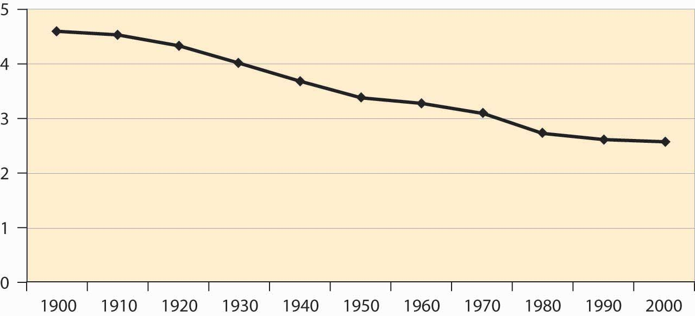The shrinking size of households reflects not just a reduction in birthrates but also an increase in the number of people living alone as illustrated in Figure 4.15 "Proportion of households by type". More women live alone than men, even though four times as many families with a single adult member are headed by women. This discrepancy—many more women both living on their own and living with children and no partner, even though there are about the same number of men and women born—is accounted for by the greater female longevity already noted.
Figure 4.15 Proportion of households by type
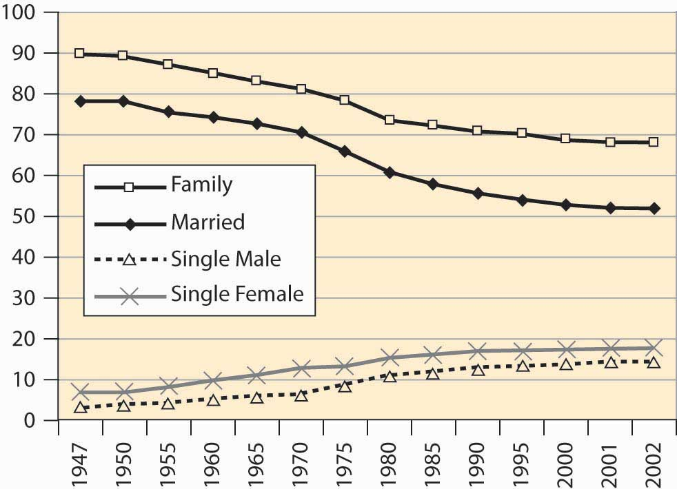Where do we live? About 60% of households live in single-family detached homes, meaning houses that stand alone. Another 5% or so live in single-family attached houses, such as “row houses.” Slightly over 7.5% live in mobile homes or trailers, and the remainder live in multi-unit housing, including apartments and duplexes. About two thirds of American families own their own homes, up from 43% in 1940. Slightly less than 0.5% of the population is incarcerated in state and federal prisons, as illustrated in Figure 4.16 "Percentage of incarcerated residents". This represents a fourfold increase over 1925 to 1975.
Figure 4.16 Percentage of incarcerated residents
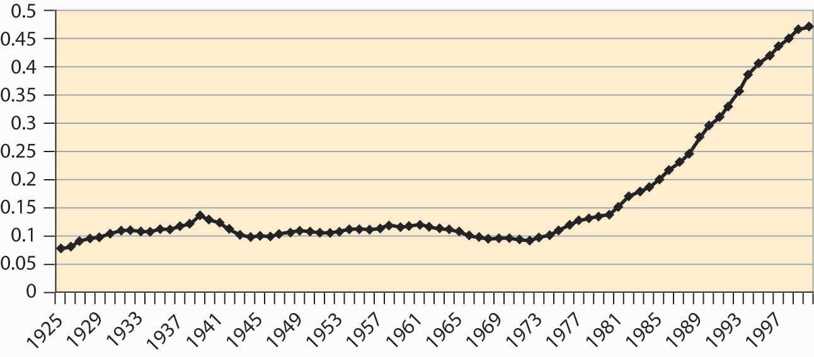Ten percent of households do not have an automobile, and 97.6% have a telephone. So-called land line telephones may start to fall as apartment dwellers, especially students, begin to rely exclusively on cell phones. Just under 99% of households have complete plumbing facilities (running water, bath or shower, flush toilet), up from 54.7% in 1940.
How much income do these households make? What is the distribution of income? One way of assessing the distribution is to use quintiles to measure dispersion. A quintileOne fifth, or 20%, of a group. is one fifth, or 20%, of a group. Thus the top income quintile represents the top 20% of income earners, the next represents those ranking 60%–80%, and so on. Figure 4.17 "Income shares for three quintiles" shows the earnings of the top, middle, and bottom quintiles.
Figure 4.17 Income shares for three quintiles
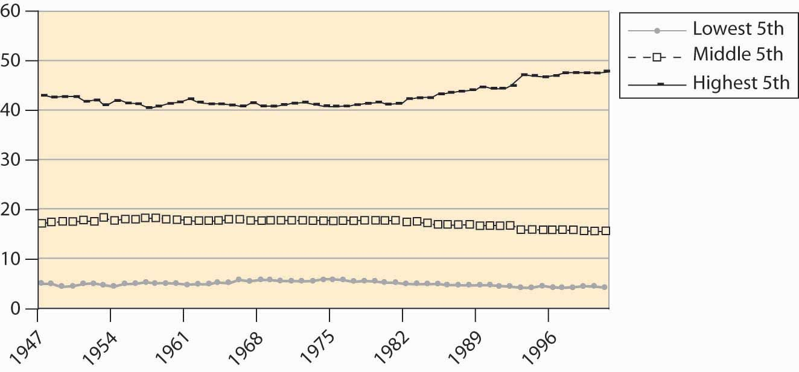Figure 4.18 Family income
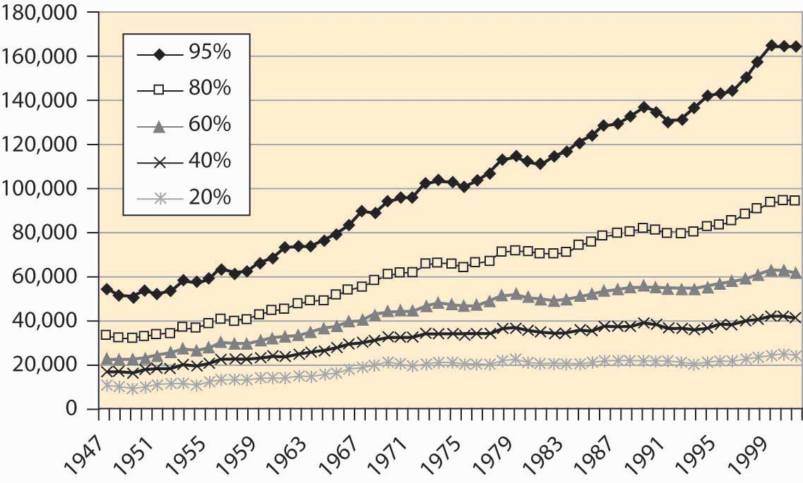The earnings of the top quintile fell slightly until the late 1960s, when it began to rise. All other quintiles lost income share to the top quintile starting in the mid-1980s. Figures like these suggest that families are getting poorer, except for an elite few. However, families are getting richer, just not as fast as the top quintile.
Figure 4.19 Family income, cumulative percentage change
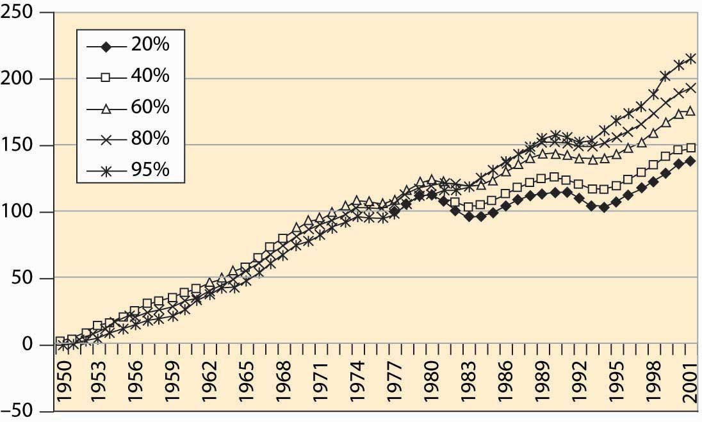Figure 4.18 "Family income" shows the income, adjusted for inflation to be in 2001 dollars, for families at various points in the income spectrum. For example, the 60% line indicates families for whom 40% of the families have higher income, and 60% have lower income. Incomes of all groups have risen, although the richer families have seen their incomes rise faster than poorer families. That is readily seen when percentage changes are plotted in Figure 4.19 "Family income, cumulative percentage change".
Real income gains in percentage terms have been larger for richer groups, even though the poor have also seen substantially increased incomes.
If the poor have fared less well than the rich in percentage terms, how have African Americans fared? After World War II, African American families earned about 50% of white family income. This ratio has risen gradually, noticeably in the 1960s after the Civil Rights ActLegislation that prohibited segregation based on race in schools, public places, and employment.—legislation that prohibited segregation based on race in schools, public places, and employment—that is credited with integrating workplaces throughout the southern United States. African American family income lagged white income growth throughout the 1980s but has been rising again, a trend illustrated in Figure 4.20 "Black family income as a percentage of white income".
Figure 4.20 Black family income as a percentage of white income
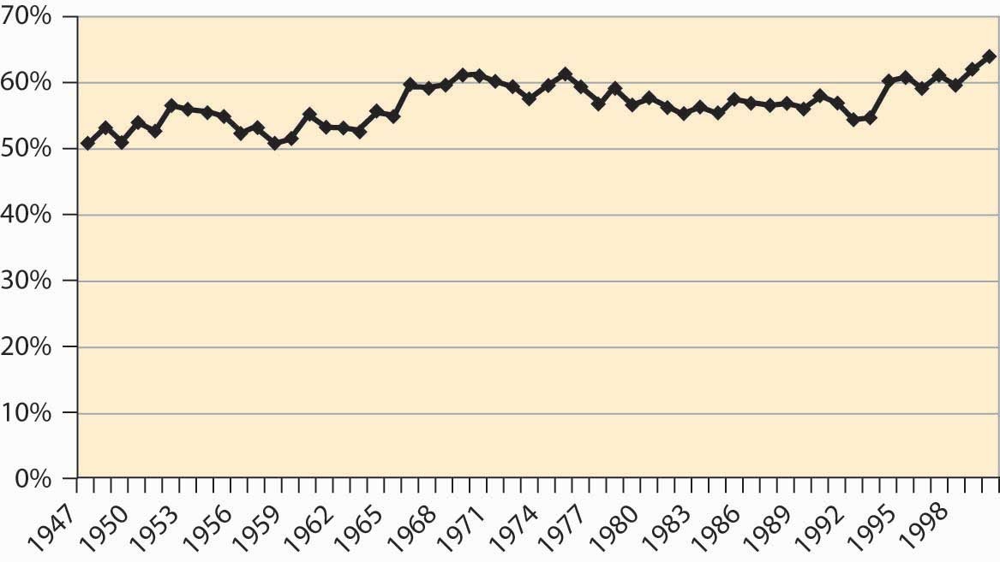These income measures attempt to actually measure purchasing power, and thus adjust for inflation. How much will $1 buy? This is a complicated question, because changes in prices aren’t uniform—some goods get relatively cheaper, while others become more expensive, and the overall cost of living is a challenge to calculate. The price index typically used is the consumer price index (CPI)A price deflator that adjusts for what it costs to buy a “standard” bundle of food, clothing, housing, electricity, and other items., a price deflator that adjusts for what it costs to buy a “standard” bundle of food, clothing, housing, electricity, and other items. Figure 4.21 "Consumer price index (1982 = 100)" shows the CPI over most of the past century, where 1982 is set as the reference year.
There have been three major inflations in the past century. Both World War I and World War II, with a large portion of the goods and services diverted to military use, saw significant inflations. In addition, there was a substantial inflation during the 1970s, after the Vietnam War in the 1960s. The price level fell during the Great DepressionA prolonged and severe economic downturn from 1929 to 1939., a prolonged and severe economic downturn from 1929 to 1939. Falling price levels create investment problems because inflation-adjusted interest rates, which must adjust for deflation, are forced to be high, since unadjusted interest rates cannot be negative. Changes in the absolute price level are hard to estimate, so the change is separately graphed in Figure 4.22 "CPI percentage changes".
Figure 4.21 Consumer price index (1982 = 100)
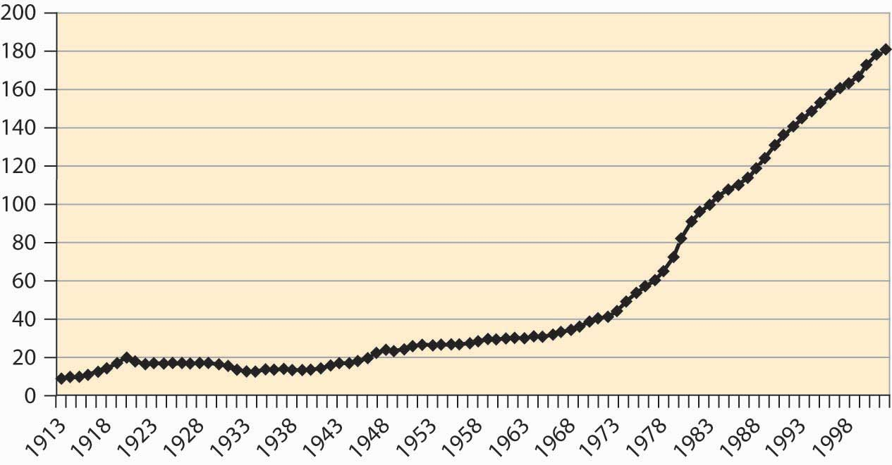Figure 4.22 CPI percentage changes
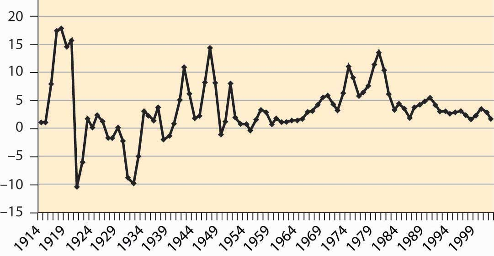The cost of food has fallen quite dramatically over the past century. Figure 4.23 "Food expenditure as percentage of income, and proportion spent out" shows that the percentage of pre-tax household income spent on food has fallen from 25% to about 10%. This fall is a reflection of greater incomes and the fact that the real cost of food has fallen.
Moreover, a much greater fraction of expenditures on food are spent away from home, a fraction that has risen from under 15% to 40%.
Figure 4.23 Food expenditure as percentage of income, and proportion spent out
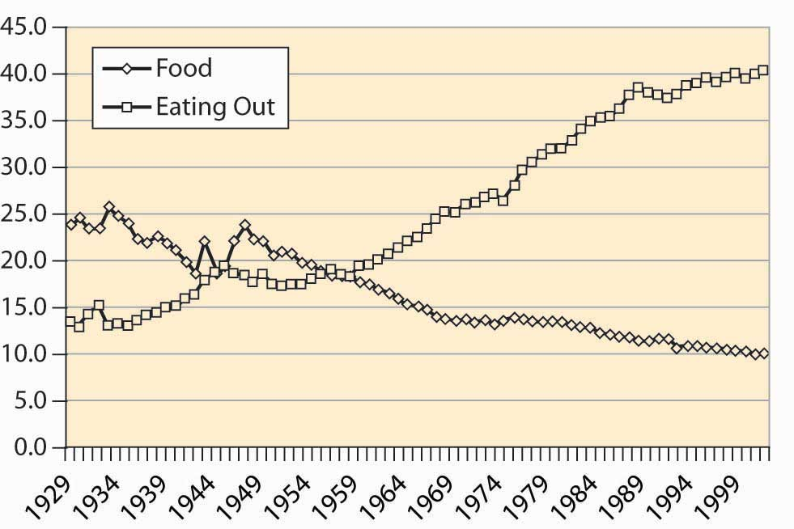How do we spend our income? The major categories are food, clothing, housing, medical, household operation, transportation, and recreation. The percentage of disposable income spent on these categories is shown for the years 1929, 1965, and 2001 in Figure 4.24 "After-tax income shares".
Figure 4.24 After-tax income shares
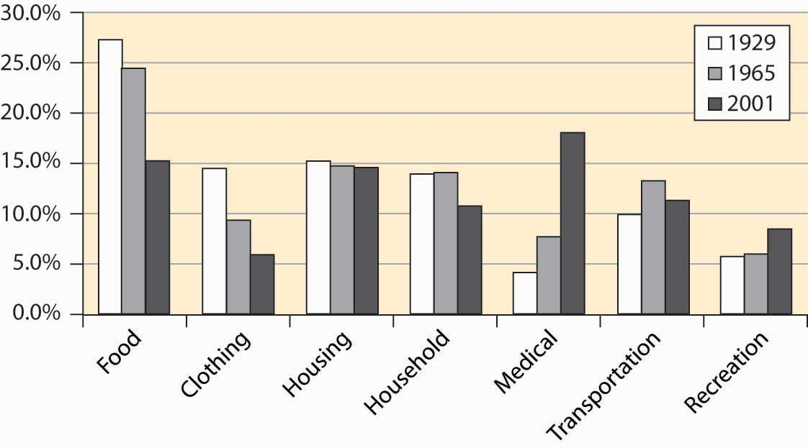The cost of food has shrunk substantially, but we enjoy more recreation and spend a lot more staying healthy. (The cost of food is larger than in Figure 4.23 "Food expenditure as percentage of income, and proportion spent out" because these figures use after-tax disposable income, rather than pre-tax income.) This is not only a consequence of our aging population but also of the increased technology available.